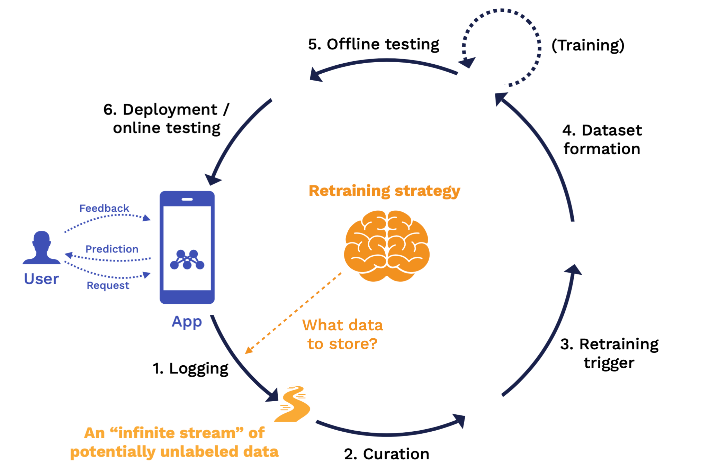
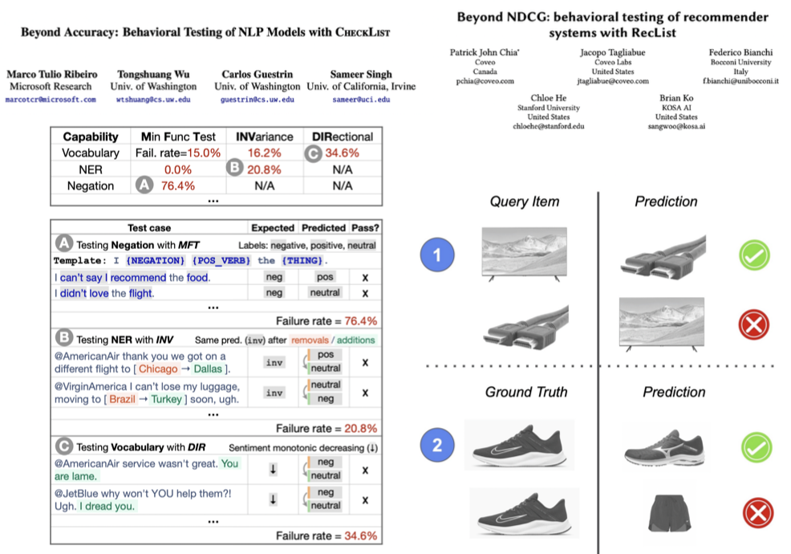

Lecture 6: Continual Learning
Lecture by Josh Tobin.
Notes by James Le and Vishnu Rachakonda.
Published September 12, 2022.
Download slides.
1 - Overview
The core justification for continual learning is that, unlike in academia, we never deal with static data distributions in the real world. The implication is that: if you want to use ML in production and build ML-powered products, you need to think about your goal of building a continual learning system, not just a static model.
Recalling the data flywheel that we've described in this class before: as you get more users, those users bring more data. You can use the data to make a better model. A better model helps you attract even more users and build a better model over time. Andrej Karpathy described the most optimistic version of it as "Operation Vacation" - if we make our continual learning system good enough, it'll get better on its own over time, and ML engineers can just go on vacation.
The reality is quite different. Initially, we gather, clean, and label some data. We train a model on that data. Then we evaluate the model and loop back to training the model to improve it based on our evaluations. Finally, we get a minimum viable model and deploy it into production.
The problem begins after we deploy the model: we generally don't have a great way of measuring how our models are actually performing in production. Often, we just spot-check some predictions to see if they are doing what they are supposed to do. If it seems to work, then it's great. We move on to work on other things.
Unfortunately, the ML engineer is probably not the one who discovers the problems, to begin with. Some business user or product manager gets complaints from users about a dipping metric, which leads to an investigation. This already costs the company money because the product and business teams must investigate the problem.
Eventually, they point back to the ML engineer and the model he is responsible for. At this point, we are stuck on doing ad-hoc analyses because we don't know what caused the model failure. Eventually, we can run a bunch of SQL queries and paste together some Jupyter notebooks to figure out what the problem is. If we are lucky, we can run an A/B test. If the test looks good, we'll deploy it into production. Then, we are back to where we started - not getting ongoing feedback about how the model is doing in production.
The upshot is that continual learning is the least well-understood part of the production ML lifecycle. Very few companies are doing this in production today. This lecture focuses on how to improve different steps of the continual learning process, pointers to learn about each step, and recommendations for doing it pragmatically and adopting it gradually.
2 - How to Think About Continual Learning
Our opinionated view about continual learning is training a sequence of models that can adapt to a continuous stream of data that comes into production. You can think about continual learning as an outer loop in your training process. On one end of the loop is your application, which consists of a model and some other code that users interact with that application by submitting requests, getting predictions back, and submitting feedback about how well the model did at providing that prediction.
The continual learning loop starts with logging, which is how we get all the data into the loop. Then we have data curation, triggers for the retraining process, dataset formation to pick the data to retrain on, the training process itself, and offline testing to validate whether the retrained model is good enough to go into production. After the model is deployed, we have online testing, and that brings the next version of the model into production, where we can start the loop all over.
Each of these stages passes the output to the next step. Output is defined by a set of rules. These rules combine to form our retraining strategy. Let's discuss what the retraining strategy looks like for each stage:

At the logging stage, the key question answered by the retraining strategy is what data should we store? At the end of this stage, we have an "infinite stream" of potentially unlabeled data coming from production and can be used for downstream analysis.
At the curation stage, the key rules we need to define are what data from that infinite stream will we prioritize for labeling and potential retraining? At the end of this stage, we have a reservoir of candidate training points that have labels and are fully ready to be fed back into a training process.
At the retraining trigger stage, the key question is when should we retrain? The output of this stage is a signal to kick off a retraining job.
At the dataset formation stage, the key rules we need to define are from this entire reservoir of data, what specific subset of that data are we using to train on for this particular training job? The output of this stage is a view into that reservoir or training data that specifies the exact data points to be used for the training job.
At the offline testing stage, the key rule we need to define is what "good enough" looks like for all stakeholders. The output of this stage is equivalent to a "pull request" report card for your model with a clear sign-off process. Once you are signed off, the new model will roll out into production.
Finally, at the deployment and online testing stage, the key rule to define is how do we know if this deployment was successful? The output of this stage is a signal to roll this model out fully to all of your users.
In an idealized world, from an ML engineer's perspective, once the model is deployed, the first version of the model is to not retrain the model directly. Instead, we want the model to sit on top of the retraining strategy and try to improve that strategy over time. Rather than training models daily, we look at metrics about how well the strategy is working and how well it's solving the task of improving our model over time in response to changes in the world. The input that we provide is by tuning the strategy to do a better job of solving that task.
For most ML engineers, our jobs don't feel like that at a high level. Our retraining strategy is just retraining models whenever we feel like it. We can get good results from ad-hoc retraining, but when you start getting consistent results and no one is actively working on the model day to day anymore, then it's worth starting to add some automation. Alternatively, if you find yourself needing to retrain the model more than once a week (or even more frequently than that) to deal with changing results in the real world, then it's worth investing in automation just to save yourself.
3 - Periodic Retraining
The first baseline retraining strategy that you should consider after you move on from ad-hoc is just periodic retraining:
-
At the logging stage, we simply log everything.
-
At the curation stage, we sample uniformly at random from the data that we've logged up until we get the maximum number of data points that we are able to handle. Then we label them using some automated tools.
-
Our retraining trigger will just be periodic.
-
We train once a week, but we do it on the last month's data, for example.
-
Then we compute the test set accuracy after each training, set a threshold on that, or more likely manual review the results each time, and spot-check some of the predictions.
-
When we deploy the model, we do spot evaluations of that deployed model on a few individual predictions to make sure things look healthy.
Periodic retraining won't work in every circumstance. There are several failure modes:
-
The first category is that you have more data than you can log or label. If you have a high volume of data, you might need to be more careful about what data to sample and enrich, particularly if that data comes from a long-tail distribution - where you have edge cases that your model needs to perform well on, but those edge cases might not be caught by just doing standard uniform sampling. Or if that data is expensive to label like in a human-in-the-loop scenario - where you need custom labeling rules or labeling is a part of the product. In either of those cases, you need to be more careful about what subset of your data you log and enrich to be used down the road.
-
The second category has to do with managing the cost of retraining. If your model is expensive to retrain, retraining it periodically is not going to be the most cost-efficient way to go, especially if you do it on a rolling window of data every single time. You will leave a lot of performance on the table by not retraining more frequently. You can partially solve this by increasing the retraining frequency, but this will increase the costs even further.
-
The final failure mode is situations where you have a high cost of bad predictions. Every time you retrain your model, it introduces risk, which comes from the fact that the data you're training the model on might be bad in some way. It might be corrupted, might have been attacked by an adversary, or might not be representative anymore of all the cases that your model needs to perform well on. The more frequently you retrain and the more sensitive you are to model failures, the more thoughtful you need to be about careful model evaluation such that you are not unduly taking on too much risk from frequent retraining.
4 - Iterating On Your Retraining Strategy
The main takeaway from this section is that we will use monitoring and observability to determine what changes we want to make to our retraining strategy.
-
We'll do that by monitoring just the metrics that actually that matter and using all other metrics for debugging.
-
When we debug an issue with our model, that will lead to potentially retraining our model. But more broadly than that, we can think of it as a change to the retraining strategy - changing our retraining triggers, our offline tests, our sampling strategies, the metrics for observability, etc.
-
As we get more confident in our monitoring, we can introduce more automation to our system.
There are no real standards or best practices on model monitoring yet. The main principles we'll follow are: (1) We'll focus on monitoring what matters and what breaks empirically; and (2) We'll compute other signals too but use them for observability and debugging.
What does it mean to monitor a model in production? We think about it as: You have some metric to assess the model quality (i.e, accuracy) and a time series of how that metric changes over time. The question you try to answer is: Is this bad or okay? Do you need to pay attention to this degradation or not?
The questions we'll need to answer are:
-
What metrics should we be looking at when we are monitoring?
-
How can we tell if those metrics are bad and warrant an intervention?
-
What are the tools that help us with this process?
What Metrics to Monitor
Choosing the right metric to monitor is probably the most important part of this process. Below you can find different types of metrics ranked in order of how valuable they are.
Outcomes and Feedback From Users
The most valuable one to look at is outcome data or feedback from your users. Unfortunately, there are no one-size-fits-all ways to do this because it depends a lot on the specifics of the product you are building. This is more of a product management question of how to design your product in a way that you can capture feedback from your users as part of the product experience.
Model Performance Metrics
The next most valuable signal to look at is model performance metrics. These are offline metrics such as accuracy. This is less useful than user feedback because of loss mismatch. A common experience many ML practitioners have is that improving model performance leads to the same or worse outcome. There's very little excuse for not doing this. To some degree, you can label some production data each day by setting up an on-call rotation or throwing a labeling party. These practices will give you some sense of how your model performance trends over time.
Proxy Metrics
The next best thing to look at is proxy metrics, which are correlated with bad model performance. These are mostly domain-specific. For example, if you are building text generation with a language model, two examples would be repetitive and toxic outputs. If you are building a recommendation system, an example would be the share of personalized responses. Edge cases can be good proxy metrics. If there are certain problems you know that you have with your model, if those increase in prevalence, that might mean your model is not doing very well.
There's an academic direction that aims at being able to take any metric you care about and approximate it on previously unseen data. How well do we think our model is doing on this new data? Which would make these proxy metrics a lot more practically useful? There are a number of different approaches here: from training an auxiliary model to predict how well your main model might do on this offline data, to using heuristics and human-in-the-loop methods.
An unfortunate result from this literature is that it's not possible to have a single method you use in all circumstances to approximate how your model is doing on out-of-distribution data. Let's say you are looking at the input data to predict how the model will perform on those input points. Then the label distribution changes. As a result, you won't be able to take into account that change in your approximate metric.
Data Quality
The next signal to look at is data quality. Data quality testing is a set of rules you apply to measure the quality of your data. This deals with questions such as: How well does a piece of information reflect reality? Does it fulfill your expectations of what's comprehensive? Is your information available when you need it? Some common examples include checking whether the data has the right schema, the data is in the expected range, and the number of records is not anomalous.
This is useful because data problems tend to be the most common issue with ML models in practice. In a Google report which covered 15 years of different pipeline outages with a particular ML model, most of the outages that happened with that model were distributed systems problems, commonly data problems.
Distribution Drift
Why Measure Distribution Drift?
Your model's performance is only guaranteed on data sampled from the same distribution as it was trained on. This can have a huge impact in practice. A recent example includes changes in model behavior during the pandemic. A bug in the retraining pipeline caused the recommendations not to be updated for new users, leading to millions of dollars in revenue lost.
Types of Distribution Drift
Distribution drift manifests itself in different ways in the wild:
-
Instantaneous drift happens when a model is deployed in a new domain, a bug is introduced in the pre-processing pipeline, or a big external shift like COVID occurs.
-
Gradual drift happens when users\' preferences change or new concepts get introduced to the corpus over time.
-
Periodic drift happens when users' preferences are seasonal or people in different time zones use your model differently.
-
Temporary drift happens when a malicious user attacks your model, a new user tries your product and churns, or someone uses your product in an unintended way.
How to Measure It?
How to tell if your distribution is drifted?
-
Your first select a window of "good" data to serve as a reference. To select that reference, you can use a fixed window of production data you believe to be healthy. Some papers advocate for using a sliding window of production data. In practice, most of the time you probably should use your validation data as the reference.
-
Once you have that reference data, you select a new window of production data to measure your distribution distance on. This is not a super principled approach and tends to be problem-dependent. A pragmatic solution is to pick one or several window sizes with a reasonable amount of data and slide them.
-
Finally, once you have your reference window and production window, you compare the windows using a distribution distance metric.
What Metrics To Use?
Let's start by considering the one-dimensional case, where you have a particular feature that is one-dimensional and can compute a density of that feature on your reference/production windows. You want some metric that approximates the distance between these two distributions.
There are a few options here:
-
The commonly recommended ones are the KL divergence and the KS test. But they are actually bad choices.
-
Sometimes-better options would be (1) infinity norm or 1-norm of the diff between probabilities for each category, and (2) Earth-mover's distance (a more statistically principled approach).
Check out this Gantry blog post to learn more about why the commonly recommended metrics are not so good and the other ones are better.
Dealing with High-Dimensional Data
In the real world for most models, we have potentially many input features or even unstructured data that is very high-dimensional. How do we deal with detecting distribution drift in those cases?
-
You can measure drift on all of the features independently: If you have a lot of features, you will hit the multiple hypothesis testing problem. Furthermore, this doesn't capture cross-correlation.
-
You can measure drift on only the important features: Generally speaking, it's a lot more useful to measure drift on the outputs of the model than the inputs. You can also rank the importance of your input features and measure drift on the most important ones.
-
You can look at metrics that natively compute or approximate the distribution distance between high-dimensional distributions: The two that are worth checking out are maximum mean discrepancy and approximate Earth-mover's distance. The caveat here is that they are pretty hard to interpret.
A more principled way to measure distribution drift for high-dimensional inputs to the model is to use projections. The idea of a projection is that:
-
You first take some high-dimensional input to the model and run that through a function.
-
Each data point your model makes a prediction on gets tagged by this projection function. The goal of this projection function is to reduce the dimensionality of that input.
-
Once you've reduced the dimensionality, you can do drift detection on that lower-dimensional representation of the high-dimensional data.
This approach works for any kind of data, no matter what the dimensionality is or what the data type is. It's also highly flexible. There are different types of projections that can be useful: analytical projections (e.g., mean pixel value, length of sentence, or any other function), random projections (e.g., linear), and statistical projections (e.g., autoencoder or other density models, T-SNE).
Cons of Looking at Distribution Drift
Models are designed to be robust to some degree of distribution drift. The figure on the left above shows a toy example to demonstrate this point. We have a classifier that's trained to predict two classes. We've induced a synthetic distribution shift to shift the red points on the top left to bottom. These two distributions are extremely different, but the model performs equally well on the training data and the production data. In other words, knowing the distribution shift doesn't tell you how the model has reacted to that shift.
The figure on the right is a research project that used data generated from a physics simulator to solve problems on real-world robots. The training data was highly out of distribution (low-fidelity, random images). However, by training on this set of training data, the model was able to generalize to real-world scenarios on the test data.
Beyond the theoretical limitations of measuring distribution drift, this is just hard to do in practice. You have to window size correctly. You have to keep all this data around. You need to choose metrics. You need to define projections to make your data lower-dimensional.
System Metrics
The last thing to consider looking at is your standard system metrics such as CPU utilization, GPU memory usage, etc. These don't tell you anything about how your model is actually performing, but they can tell you when something is going wrong.
Practical Recommendations
We also want to look at how hard it is to compute the aforementioned stages in practice. As seen below, the Y-axis shows the value of each signal and the X-axis shows the feasibility of measuring each signal.
-
Measuring outcomes or feedback has pretty wide variability in terms of how feasible it is to do, as it depends on how your product is set up.
-
Measuring model performance tends to be the least feasible thing to do because it involves collecting some labels.
-
Proxy metrics are easier to compute because they don't involve labels.
-
System metrics and data quality metrics are highly feasible because you have off-the-shelf tools for them.
Here are our practical recommendations:
-
Basic data quality checks are zero-regret, especially if you are retraining your model.
-
Get some way to measure feedback, model performance, or proxy metrics, even if it's hacky or not scalable.
-
If your model produces low-dimensional outputs, monitoring those for distribution shifts is also a good idea.
-
As you evolve your system, practice the observability mindset.
While you can think of monitoring as measuring the known unknowns (e.g., setting alerts on a few key metrics), observability is measuring unknown unknowns (e.g., having the power to ask arbitrary questions about your system when it breaks). An observability mindset means two implications:
-
You should keep around the context or raw data that makes up the metrics that you are computing since you want to be able to drill all the way down to potentially the data points themselves that make up the degraded metric.
-
You can go crazy with measurement by defining a lot of different metrics. You shouldn't necessarily set alerts on each of those since you don't want too many alerts. Drift is a great example since it is useful for debugging but less so for monitoring.
Finally, it's important to go beyond aggregate metrics. If your model is 99% accurate in aggregate but only 50% accurate for your most important user, is it still "good"? The way to deal with this is by flagging important subgroups or cohorts of data and alerting on important metrics across them. Some examples are categories you don't want to be biased against, "important" categories of users, and categories you might expect to perform differently on (languages, regions, etc.).
How To Tell If Those Metrics are "Bad"
We don't recommend statistical tests (e.g., KS-Test) because they try to return a p-value for the likelihood that the data distributions are not the same. When you have a lot of data, you will get very small p-values for small shifts. This is not what we actually care about since models are robust to a small number of distribution shifts.
Better options than statistical tests include fixed rules, specific ranges, predicted ranges, and unsupervised detection of new patterns. This article on dynamic data testing has the details.
Tools for Monitoring
The first category is system monitoring tools, a premature category with different companies in it (Datadog, Honeycomb, New Relic, Amazon CloudWatch, etc.). They help you detect problems with any software system, not just ML models. They provide functionality for setting alarms when things go wrong. Most cloud providers have decent monitoring solutions, but if you want something better, you can look at monitoring-specific tools to monitor anything.
This raises the question of whether we should just use these system monitoring tools to monitor ML metrics as well. This blog post explains that it's feasible but highly painful due to many technical reasons. Thus, it's better to use ML-specific tools.
Two popular open-source monitoring tools are EvidentlyAI and whylogs.
-
Both are similar in that you provide them with samples of data and they produce a nice report that tells you where their distribution shifts are.
-
The big limitation of both is that they don't solve the data infrastructure and the scale problem. You still need to be able to get all that data into a place where you can analyze it with these tools.
-
The main difference between them is that whylogs is more focused on gathering data from the edge by aggregating the data into statistical profiles at inference time. You don't need to transport all the data from your inference devices back to your cloud.
Lastly, there are a bunch of different SaaS vendors for ML monitoring and observability: Gantry, Aporia, Superwise, Arize, Fiddler, Arthur, etc.
5 - Retraining Strategy
Weve talked about monitoring and observability, which allow you to identify issues with your continual learning system. Now, well talk about how we will fix the various stages of the continual learning process based on what we learn from monitoring and observability.
Logging
The first stage of the continual learning loop is logging. As a reminder, the goal of logging is to get data from your model to a place where you can analyze it. The key question to answer here is: what data should I actually log?
For most of us, the best answer is just to log all of the data. Storage is cheap. It's better to have data than not to have it. There are, however, some situations where you can't do that. For example, if you have too much traffic going through your model to the point where it's too expensive to log all of it, or if you have data privacy concerns, or if you're running your model at the edge, you simply may not be able to log all your data.
In these situations, there are two approaches that you can take. The first approach is profiling. With profiling, rather than sending all the data back to your cloud and then using that to monitor, you instead compute statistical profiles of your data on the edge that describe the data distribution that you're seeing. This is great from a data security perspective because it doesn't require you to send all the data back home. It minimizes your storage cost. Finally, you don't miss things that happen in the tails, which is an issue for the next approach. That'll describe the place to use. This approach is best used for security-critical applications. Computing statistical profiles is a pretty interesting topic in computer science and data summarization that is worth checking out if youre interested in this approach.
The other approach is sampling. With sampling, you'll just take certain data points and send those back to your monitoring and logging system. The advantage of sampling is that it has minimal impact on your inference resources. You don't have to actually spend the computational budget to compute profiles. You also get to have access to the raw data for debugging and retraining, albeit a smaller amount. This is the approach we recommend for any other kind of application.
Curation
The next step in the continual learning loop is curation. The goal of curation is to take the infinite stream of production data, which is potentially unlabeled, and turn it into a finite reservoir of enriched data suitable for training. Here, we must answer, what data should be enriched?
You could sample and enrich data randomly, but that may not prove helpful to your model. Importantly, you miss rare classes or events. A better approach can be to perform stratified subsampling, wherein you sample specific proportions of individuals from various subpopulations (e.g. race). The most advanced strategy for picking data to enrich is to curate data points that are somehow interesting for the purpose of improving your model.
There are a few different ways of doing this: user-driven curation loops via feedback loops, manual curation via error analysis, and automatic curation via active learning.
User-driven curation is a great approach that is easy to implement, assuming you have a clear way of gathering user feedback. If your user churns, clicks thumbs down, or performs some other similar activity on the models output, you have an easy way of understanding data that could be enriched for future training jobs.
If you don't have user feedback, or if you need even more ways of gathering interesting data from your system, the second most effective way is by doing manual error analysis. In this approach, we look at the errors that our model is making, reason about the different types of failure modes that we're seeing, and try to write functions or rules that help capture these error modes. We'll use those functions to gather more data that might represent those error cases. Some examples of these function-based approaches are similarity-based curation, which uses nearest neighbors, and projection-based curation, wherein we train a new function or model to recognize key data points.
The last way to curate data is to do so automatically using a class of algorithms called active learning. The way active learning works is that, given a large amount of unlabeled data, we will try to determine which data points would improve model performance the most (if you were to label those data points next and train on them). These algorithms define a sampling strategy, rank all of your unlabeled examples using a scoring function that defines the sampling strategy, and mark the data points with the highest scores for future labeling.
There are a number of different scoring function approaches that are shown below.
- Most uncertain: sample low-confidence and high-entropy predictions or predictions that an ensemble disagrees on.
- Highest predicted loss: train a separate model that predicts loss on unlabeled points, then sample the highest predicted loss.
- Most different from labels: train a model to distinguish labeled and unlabeled data, then sample the easiest to distinguish.
- Most representative: choose points such that no data is too far away from anything we sampled.
- Big impact on training: choose points such that the expected gradient is large or points where the model changes its mind the most about its prediction during training.
Uncertainty scoring tends to be the most commonly used method since it is simple and easy to implement.
You might have noticed that there's a lot of similarity between some of the ways that we do data curation and the way that we do monitoring. That's no coincidence--monitoring and data curation are two sides of the same coin! They're both interested in solving the problem of finding data points where the model may not be performing well or where we're uncertain about how the model is performing on those data points.
Some examples of people practically applying data curation are OpenAIs DALL-E 2, which uses active learning and manual curation, Tesla, which uses feedback loops and manual curation, and Cruise, which uses feedback loops.
Some tools that help with data curation are Scale Nucleus, Aquarium, and Gantry.
To summarize then, here are our final set of recommendations for applying data curation.
- Random sampling is a fine starting point. If you want to avoid bias or have rare classes, do stratified sampling instead.
- If you have a feedback loop, then user-driven curation is a no-brainer. If not, confidence-based active learning is easy to implement.
- As your model performance increases, youll have to look harder for challenging training points. Manual techniques are unavoidable and should be embraced. Know your data!
Retraining Triggers
After we've curated our infinite stream of unlabeled data down to a reservoir of labeled data that's ready to potentially train on, the next thing that we'll need to decide is what trigger are we gonna use to retrain?
The main takeaway here is that moving to automated retraining is not always necessary. In many cases, just manually retraining is good enough. It can save you time and lead to better model performance. It's worth understanding when it makes sense to actually make the harder move to automated retraining.
The main prerequisite for moving to automated retraining is being able to reproduce model performance when retraining in a fairly automated fashion. If you're able to do that and you are not really working on the model actively, it's probably worth implementing some automated retraining. As a rule of thumb, if youre retraining the model more than once a month, automated retraining may make sense.
When it's time to move to automated training, the main recommendation is to just keep it simple and retrain periodically, e.g. once a week. The main question though is, how do you pick the right training schedule? The recommendation here is to:
- Apply measurement to figure out a reasonable retraining schedule.
- Plot your model performance and degradation over time.
- Compare how retraining the model at various intervals would have resulted in improvements to its performance.
As seen below, the area between the curves represents the opportunity cost, so always remember to balance the upside of retraining with the operational costs of retraining.
This is a great area for future academic research! More specifically, we can look at ways to automate determining the optimal retraining strategy based on performance decay, sensitivity to performance, operational costs, and retraining costs.
An additional option for retraining, rather than time-based intervals, is performance triggers (e.g. retrain when the model accuracy dips below 90%). This helps react more quickly to unexpected changes and is more cost-optimal, but requires very good instrumentation to process these signals along with operational complexity.
An idea that probably won't be relevant but is worth thinking about is online learning. In this paradigm, you train on every single data point as it comes in. It's not very commonly used in practice.
A version of this idea that is used fairly frequently in practice is online adaptation. This method operates not at the level of retraining the whole model itself but rather on the level of adapting the policy that sits on top of the model. What is a policy you ask? A policy is the set of rules that takes the raw prediction that the model made, like the score or the raw output of the model, and turns it into the output the user sees. In online adaptation, we use algorithms like multi-armed bandits to tune these policies. If your data changes very frequently, it is worth looking into this method.
Dataset Formation
Imagine we've fired off a trigger to start a new training job. The next question we need to answer is, among all of the labeled data in our reservoir of data, what specific data points should we train on for this particular new training job?
We have four options here. Most of the time in deep learning, we'll just use the first option and train on all the data that we have available to us. Remember to keep your data version controlled and your curation rules consistent.
If you have too much data to do that, you can use recency as a heuristic for a second option and train on only a sliding window of the most recent data (if recency is important) or sample a smaller portion (if recency isnt). In the latter case, compare the aggregate statistics between the old and new windows to ensure there arent any bugs. Its also important in both cases to compare the old and new datasets as they may not be related in straightforward ways.
A useful third option is online batch selection, which can be used when recency doesnt quite matter. In this method, we leverage label-aware selection functions to choose which items in mini-batches to train on.
A more difficult fourth option that isnt quite recommended is continual fine-tuning. Rather than retraining from scratch every single time, you train your existing model on just new data. The reason why you might wanna do this primarily is because it's much more cost-effective. The paper below shares some findings from GrubHub, where they found a 45x cost improvement by doing this technique relative to sliding windows.
The big challenge here is that unless you're very careful, it's easy for the model to forget what it learned in the past. The upshot is that you need to have mature evaluation practices to be very careful that your model is performing well on all the types of data that it needs to perform well on.
Offline Testing
After the previous steps, we now have a new candidate model that we think is ready to go into production. The next step is to test that model. The goal of this stage is to produce a report that our team can sign off on that answers the question of whether this new model is good enough or whether it's better than the old model. The key question here is, what should go into that report?
This is a place where there's not a whole lot of standardization, but the recommendation we have here is to compare your current model with the previous version of the model on all of the metrics that you care about, all of the subsets of data that you've flagged are important, and all the edge cases youve defined. Remember to adjust the comparison to account for any sampling bias.
Below is a sample comparison report. Note how the validation set is broken out into concrete subgroups. Note also how there are specific validation sets assigned to common error cases.
In continual learning, evaluation sets are dynamically refined just as much as training sets are. Here are some guidelines for how to manage evaluation sets in a continual learning system:
- As you curate new data, add some of it to your evaluation sets. For example, if you change how you do sampling, add that newly sampled data to your evaluation set. Or if you encounter a new edge case, create a test case for it.
- Corollary 1: you should version control your evaluation sets as well.
- Corollary 2: if your data changes quickly, always hold out the most recent data for evaluation.
Once you have the testing basics in place, a more advanced option that you can look into here is expectation testing. Expectation tests work by taking pairs of examples where you know the relationship between the two. These tests help a lot with understanding the generalizability of models.

Just like how data curation is highly analogous to monitoring, so is offline testing. We want to observe our metrics, not just in aggregate but also across all of our important subsets of data and across all of our edge cases. One difference between these two is that you will have different metrics available in offline testing and online testing. For example, youre much more likely to have labels offline. Online, youre much more likely to have feedback. We look forward to more research that can predict online metrics from offline ones.
Online Testing
Much of this we covered in the last lecture, so well keep it brief! Use shadow mode and A/B tests, roll out models gradually, and roll back models if you see issues during rollout.
6 - The Continual Improvement Workflow
To tie it all together, well conclude with an example. Monitoring and continual learning are two sides of the same coin. We should be using the signals that we monitor to very directly change our retraining strategy. This section describes the future state that comes as a result of investing in the steps laid out previously.
Start with a place to store and version your strategy. The components of your continual learning strategy should include the following:
- Inputs, predictions, user feedback, and labels.
- Metric definitions for monitoring, observability, and offline testing.
- Projection definitions for monitoring and manual data curation.
- Subgroups and cohorts of interest for monitoring and offline testing.
- Data curation logic.
- Datasets for training and evaluation.
- Model comparison reports.
Walk through this example to understand how changes to the retraining strategy occur as issues surface in our machine learning system.
7 - Takeaways
To summarize, continual learning is a nascent, poorly understood topic that is worth continuing to pay attention to. Watch this space! In this lecture, we focused on all the steps and techniques that allow you to use retraining effectively. As MLEs, leverage monitoring to strategically improve your model. Always start simple, and get better!
We are excited to share this course with you for free.
We have more upcoming great content. Subscribe to stay up to date as we release it.
We take your privacy and attention very seriously and will never spam you. I am already a subscriber